Ph.D. Candidate · Computer Science & Engineering · UC Santa Cruz
Vision-Language Models (On-device Unified Model) Desktop Use Agents Trustworthy AI Weakly / Self-supervised Learning
I am a Ph.D. candidate in Computer Science & Engineering at UC Santa Cruz, advised by Prof. Yang Liu. My research focuses on vision-language models (On-device Unified Model), desktop use agents, and trustworthy AI (machine unlearning, learning with noisy labels, and federated learning).
I am currently a research intern at Adobe Research, distilling cloud-scale unified multimodal models into on-device students. Previously, I interned at Apple (proactive AI and streaming video-language understanding) and twice more at Adobe Research (RLHF for LLMs; vision-language representation learning). Before UCSC, I received my M.S. from UC San Diego, where I worked with Prof. Xiaolong Wang on self-supervised learning, and my B.S. from Tongji University.
* equal contribution
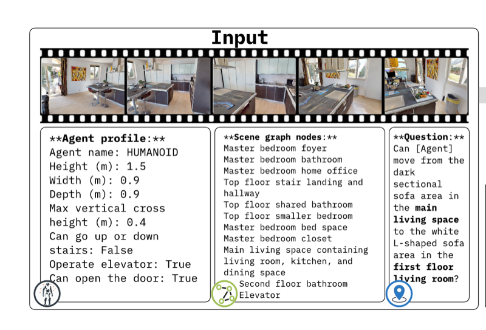
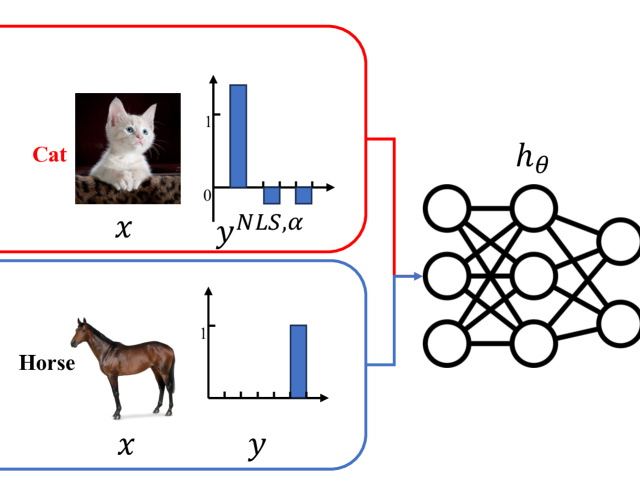
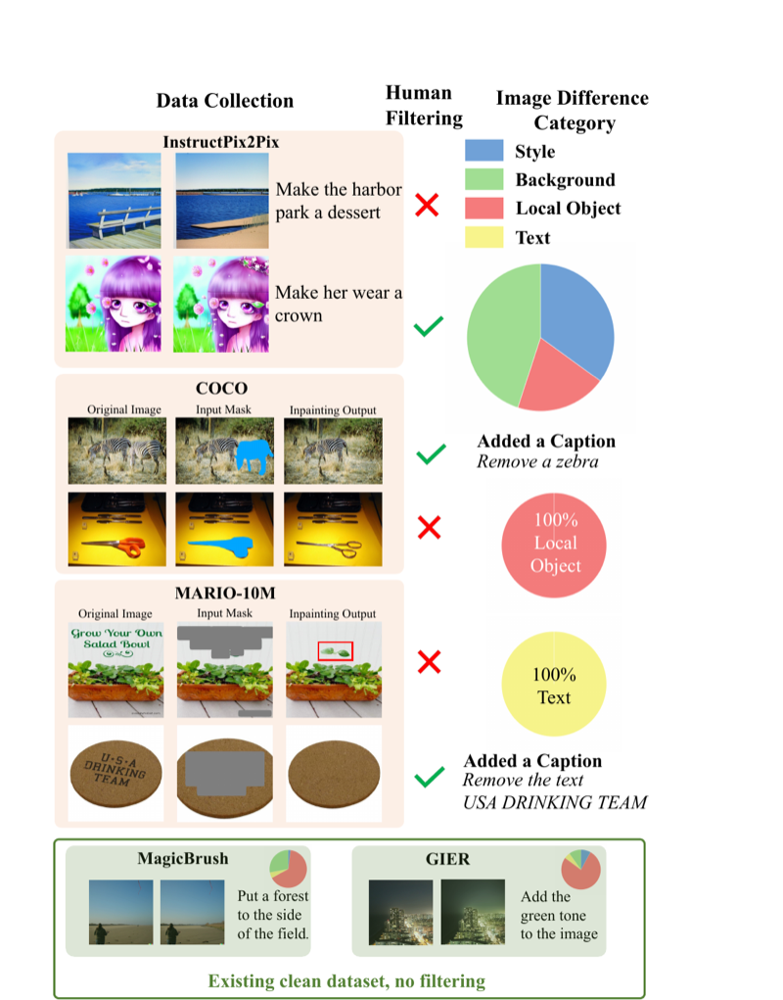
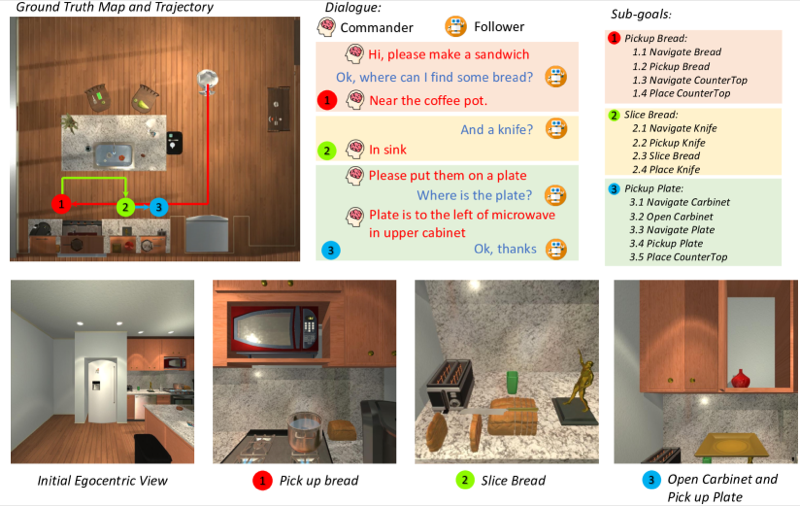
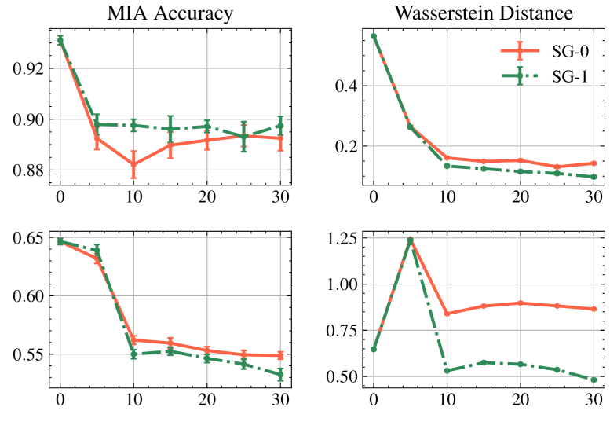
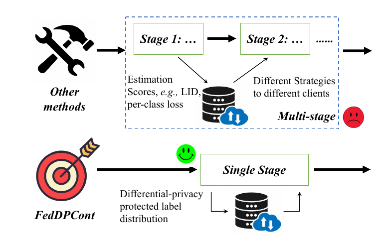
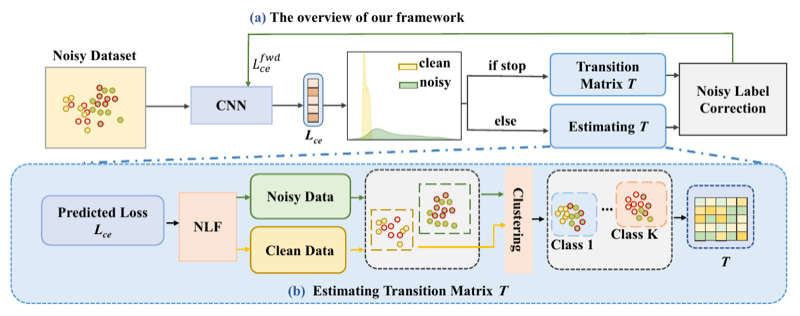
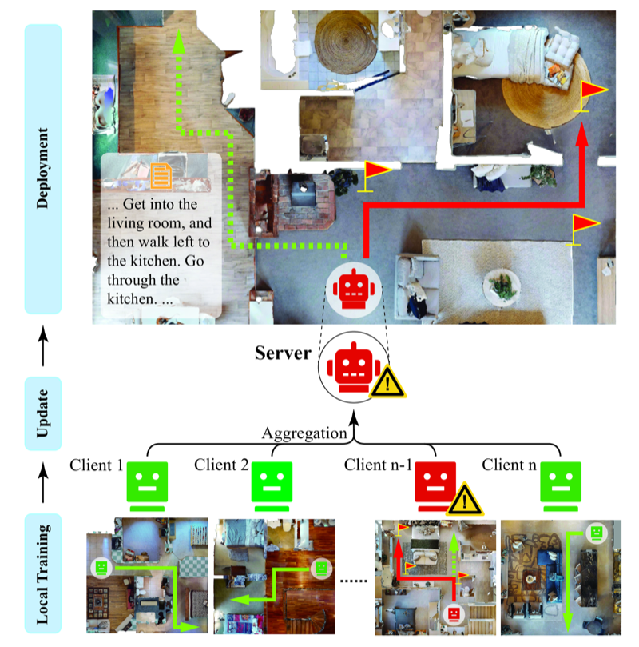
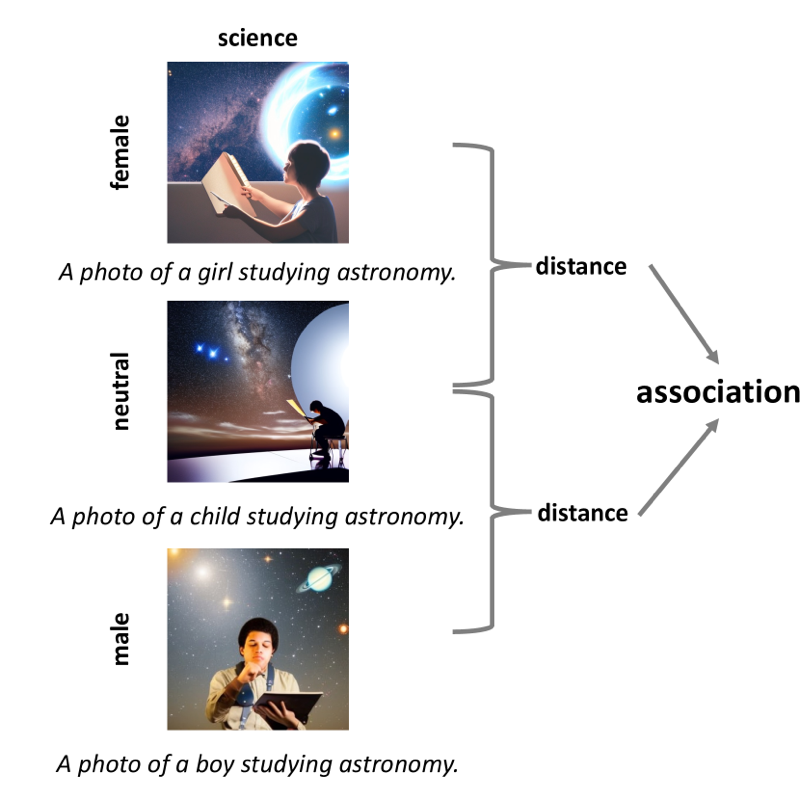
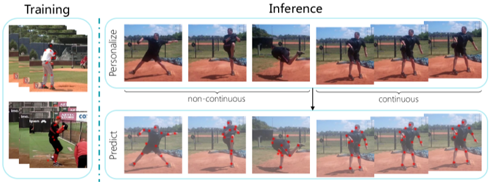
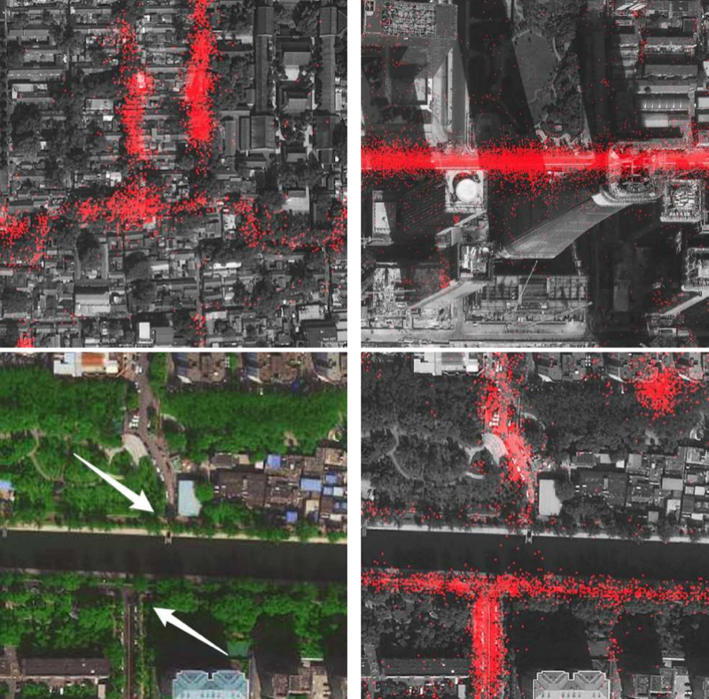
Reviewer: CVPR, ICCV, ECCV, NeurIPS, ICLR, ICML, AISTATS, AAAI, ACL, EMNLP, WACV, ACCV, ACM SIGSPATIAL.